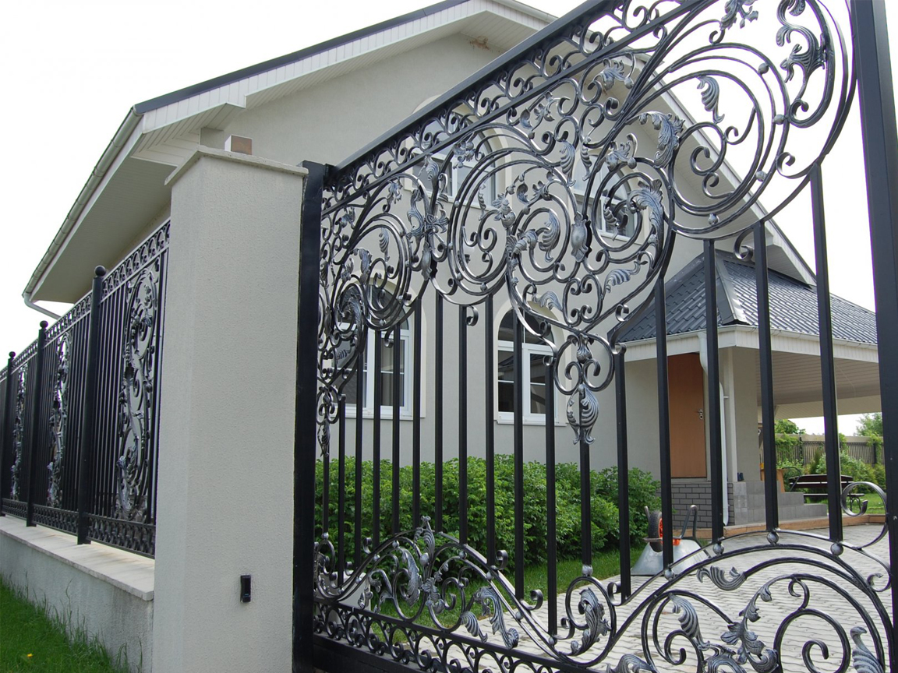
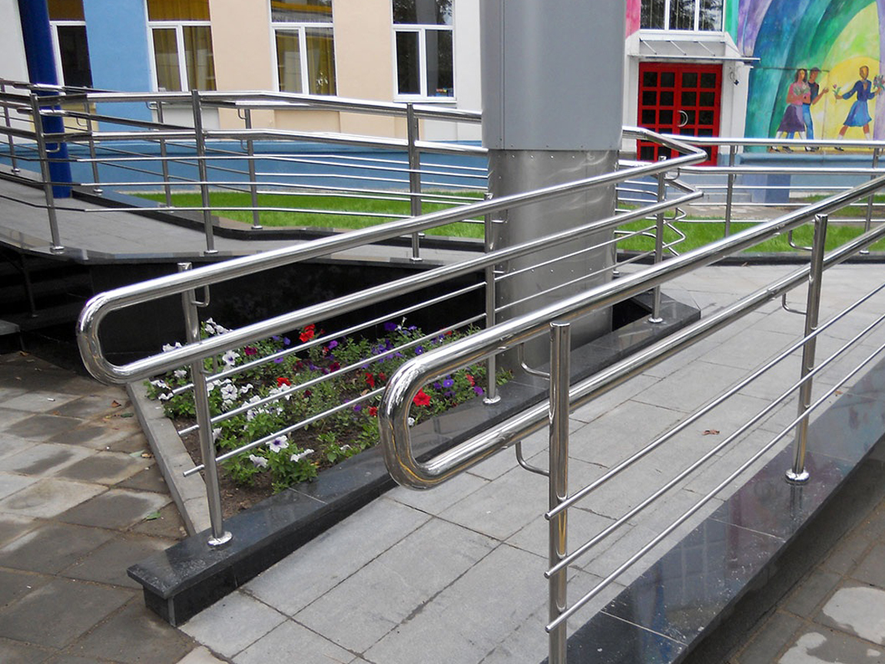
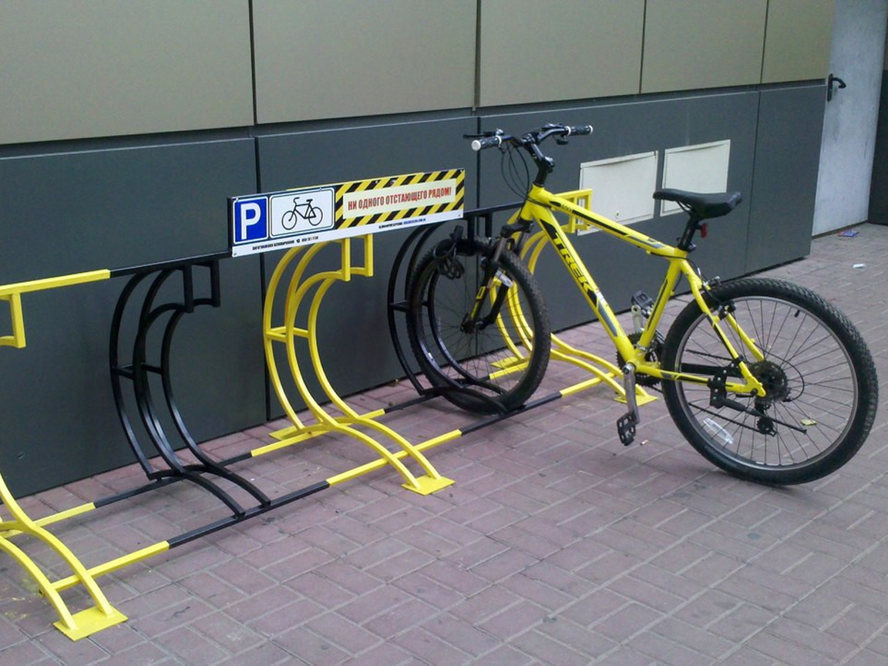
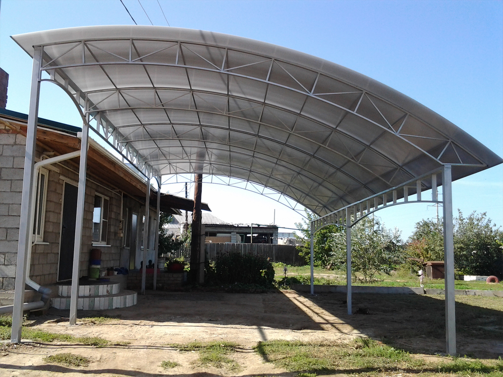

Производственное подразделение Set Service Group предоставляет услуги по производству социальных металлоконструкций. Наши специалисты в кратчайшие сроки обработают вашу заявку и предложат качественные варианты реализации проекта.
Газонные ограждения, металлические заборы
Изготовление газонных ограждений
Для сварных газонных ограждений используются следующие элементы металлоконструкций:
- профилированная труба квадратного сечения;
- труба круглого сечения
- стальные прутки круглого сечения;
- стальные прутки квадратного сечения до 20 мм;
- стальные полоски шириной 4-10 мм.
Данные элементы используются также при изготовлении других видов ограждений, например, лестничных и балконных. Опорные столбики изготавливаются из профильной трубы большего сечения, и украшаются пластиковыми или металлическими навершиями, которые защищают их внутренние стенки от попадания влаги. Геометрический рисунок сварных металлических ограждений газонов содержит следующие элементы:
- квадраты;
- круги;
- несложные завитки;
- решетки.
Друг с другом все эти элементы соединяются с помощью точечной сварки. Точно так же или с использованием специальных креплений сварные секции забора крепятся к столбикам.
Чтобы ограждение клумб и газонов прослужило как можно дольше, на все элементы обязательно наносится специальное покрытие. Оно препятствует коррозии, возникающей в результате воздействия атмосферной влаги и других агрессивных сред.
Металлические заборы
Металлические заборы являются надежными и прочными ограждениями. Металлические заборы используются не только для очерчивания территорий. Красивые и долговечные конструкции становятся украшениями многих участков. Set Service Group производит металлические заборы на заказ.
Изготовление металлических заборов
Металлические заборы производятся из следующих материалов:
- профилированные трубы квадратного сечения;
- трубы круглого сечения;
- стальные прутки круглого и квадратного сечения;
- стальные полоски различной ширины.
Данные элементы используются также при изготовлении других видов ограждений, например, газонных и балконных. Многообразие рисунков секций металлических заборов позволяет подобрать соответствующий дизайн. Опорные столбики изготавливаются из профильной трубы большего сечения, и украшаются пластиковыми или металлическими навершиями, которые защищают их внутренние стенки от попадания влаги.
Друг с другом все эти элементы соединяются с помощью сварки. Точно так же или с использованием специальных креплений сварные секции забора крепятся к столбикам. Чтобы металлические заборы прослужили как можно дольше, на все элементы обязательно наносится специальное покрытие. Оно препятствует коррозии, возникающей в результате воздействия атмосферной влаги и других агрессивных сред.
Преимущества металлических заборов
К преимуществам металлических заборов можно отнести:
- универсальность, подходят к любому дизайну и архитектуре;
- прочность и надежность сварных конструкций;
- длительный срок службы, при правильной обработки измеряемый десятилетиями;
- металлические сварные заборы не требуют специализированного ухода;
- простота ремонта при повреждении.
Лестничные ограждения применяются как коммерческих, так и в жилых постройках. Наряду с обеспечением безопасности посетителей помещения, лестничное ограждение является атрибутом интерьера. Set Service Group производит лестничные ограждения на заказ.
Изготовление лестничных ограждений
В большинстве случаев лестничные ограждения состоят из нескольких базовых элементов:
- перила;
- поручни;
- балясины.
При изготовлении лестничных ограждений очень важно учесть все детали их эксплуатации с учетом индивидуальных особенностей. Наличие перил и поручней необходимо, прежде всего, для обеспечения уровня безопасности, а также удобства в использовании лестниц. И поручни, и перила должны тщательно закрепляться для надежности всей лестничной конструкции. Соединение составных частей происходит посредством сварки, что обеспечивает прочность и надежность конструкции.
Монтаж лестничных ограждений
После изготовления и сборки лестничных ограждений на производстве их монтаж на объекте является заключительным и наиважнейшим этапом. От того насколько профессионально и качественно будет осуществлен монтаж лестничных ограждений зависит внешний вид и безопасность всей лестницы.
Работы по монтажу лестничных ограждений должны осуществляться профессиональными сотрудниками в соответствии со всеми требованиями действующих ГОСТов и СНИПов.
Долговечность и надёжность крепления элементов ограждения зависит от нескольких факторов:
- правильность выбора способа и технологии крепления;
- качество используемых материалов и комплектующих для монтажа;
- соблюдение технологических процессов;
- использование профессионального инструмента;
- наличие теоретических знаний и практического опыта у сотрудников, осуществляющих монтаж.
Изготовление пандусов и поручней с помощью металлоконструкций позволяет решить проблему доступности без сложных работ по изготовлению железобетонных сооружений. Изготовление металлических пандусов более универсально, имеет меньше ограничений по месту размещения, возможно в любое время года. Set Service Group производит пандусы на заказ и поручни на заказ.
Изготовление пандусов
Производство пандусов происходит посредством соединения металлоконструкций из прочных сплавов, которые отличаются надежностью и могут выдержать большие нагрузки.
В категории металлических пандусов для инвалидов на сегодняшний день есть большое разнообразие вариантов:
- Откидные – с возможностью складывания конструкции пандуса (закрепления на стене).
- Ролл пандусы – представляют собой отдельные секции в виде рулонов, легко сворачиваемых и простых в эксплуатации.
- Раздвижные и телескопические – пандусы, которые способны раздвигаться, увеличиваясь в длину.
- Рампы - наклонные платформы, небольшие по размерам, которые помогают преодолевать пороги.
Изготовление поручней
Поручни для инвалидов оказывают неоценимую помощь людям с проблемами опорно-двигательного аппарата и другим маломобильным группам населения при перемещении по зданию, посещению ванной комнаты и туалета.
Set Service Group занимается изготовлением поручней следующих типов:
- стальные;
- алюминивые с пластиковой накладкой;
- поручни-отбойники.
Как правило, стальные поручни получили широкое применение при организации доступности входной группы, лестничных маршей и коридоров здания, в тех местах, где особо необходимы более сильные и устойчивые к перепадам температур и повышенной проходимости конструкции.
Алюминиевые поручни с пластиковой накладкой, которая обеспечивает комфорт во время перемещения и более удобны при использовании, широко применяются для организации доступности санузлов и ванных комнат, где они способны вписаться в дизайн и предоставить более комфортные условия использования.
Кроме того, при оборудовании больниц, реабилитационных центров и других социально-значимых объектов для создания безбарьерной среды применяют поручни-отбойники, которые помогают при передвижении внутри здания и по коридорам.
Велопарковка представляет собой металлическое изделие, как правило из круглых или профильных труб, позволяющее удерживать велосипед в вертикальном положении. Данные изделия устанавливаются для парковки велосипедов возле частных домов, магазинов, торговых центров и офисов. Set Service Group производит велопарковки на заказ.
Классификация велопарковок
Следует различать следующие виды велопарковок:
-
Отсековые. Являются самым распространённым вариантом и представляет собой готовую целиковую конструкцию с трубами, расположенными поперёк этой конструкции.
Велосипед, а точнее его передняя часть, устанавливается между этих труб и к ним же крепится при помощи специальных велосипедных замков. Сама конструкция, для большей надёжности, крепится либо к стене, либо к асфальту. Плюсом такой парковки можно отметить то, что она занимает мало места и может расположить в себе до 13-15 велосипедов.
- Продольные. Такая конструкция представляет собой некие стеллажи, расположенные под углом 90 градусов. Установка велосипеда в такую конструкцию осуществляется в горизонтальном положении. Занимает достаточно много места и является мало вместительной, но обеспечивает надежную фиксацию велосипеда.
- Турниковые. Конструкция таких парковок выполнена из труб в форме буквы *П*, которые крепятся в асфальте. Могут быть большими и маленькими. К большим можно крепить раму и переднее колесо велосипеда, а к маленьким только колесо. Является самым удобным видом велопарковки (если говорить о большом варианте).
- Крытые. Крытые велопарковки позволяют парковать велосипеды в любых погодных условиях. Крыша велопарковки, которая изготавливается из листового поликарбоната, предотвращает попадание любых осадков на припаркованный велосипед.
Производство велопарковок
Самым популярным и надежным материалом для изготовления велопарковок является нержавеющая сталь. Конструкция из нержавеющей стали прослужит достаточно большой срок, при этом не потребует практически никакого обслуживания. Внешний вид такой парковки из нержавеющей стали будет на высшем уровне и практически не изменится со временем.
Также возможно производство велопарковок из обычной стали. Велопарковки из стали достаточно прочные, практические не подвергаются коррозии и отличаются большим сроком службы. Для придания антикоррозийных свойств и привлекательного вида производится обработка специальным составом и нанесение красочного покрытия.
Металлический навес - это надежная, прочная и лёгкая постройка, основу которой составляют каркас из металла и крыша из профнастила или поликарбоната. При этом металлоконструкции обязательно покрываются антикоррозионными эмалями необходимого цвета. Set Service Group занимается изготовлением металлических навесов на заказ по вашим чертежам.
Классификация металлических навесов
В зависимости от формы крыши металлические навесы можно классифицировать на:
- односкатный навес, который часто используется для оборудования парковочного места или летней кухни;
- двухскатный навес, у которого крыша представляет собой две наклонные разнонаправленные плоскости, образующие ребро в верхней части навеса;
- многоскатный навес, у которого количество плоскостей крыши больше двух;
- дугообразный навес, в котором крыша представляет собой арочную сводчатую конструкцию.
Назначение металлических навесов
Сферами применения металлических навесов являются:
- покрытия складских помещений
- небольших производственных зданий
- автостоянок (как общественных, так и сооружение индивидуальных навесов для машины)
- зданий общественного назначения – к примеру, рынков.
- в качестве козырьков у входов в различные торговые предприятия (магазины, супер- и минимркеты, аптеки и др.)
- для покрытия и некрупных спортивных комплексов для занятий на открытом воздухе, детских игровых площадок.
Благодаря малой массе, технологичности и транспортабельности покрытия металлические навесы целесообразны при строительстве как в черте города, так и за ее пределами.